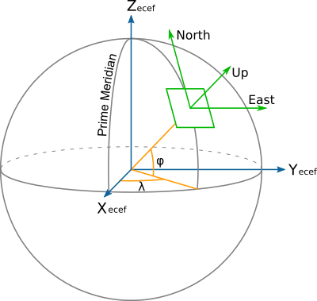

Geocentric to topocentric conversion¶
New in version 8.0.0.
Convert geocentric coordinates to topocentric coordinates (in the forward path).
Alias |
topocentric |
Domain |
3D |
Input type |
Geocentric cartesian coordinates |
Output type |
Topocentric cartesian coordinates |
This operation converts geocentric coordinate values (X, Y, Z) to topocentric (E/East, N/North, U/Up) values. This is also sometimes known as the ECEF (Earth Centered Earth Fixed) to ENU conversion.
Topocentric coordinates are expressed in a frame whose East and North axis form a local tangent plane to the Earth's ellipsoidal surface fixed to a specific location (the topocentric origin), and the Up axis points upwards along the normal to that plane.
{kind=link}
The topocentric origin is a required parameter of the conversion, and can be
expressed either as geocentric coordinates (X_0, Y_0 and Z_0) or
as geographic coordinates (lat_0, lon_0, h_0).
When conversion between geographic and topocentric coordinates is desired, the topocentric conversion must be preceded by the Geodetic to cartesian conversion conversion to perform the initial geographic to geocentric coordinates conversion.
The formulas used come from the "Geocentric/topocentric conversions" paragraph
of [IOGP2018]. +proj=topocentric alone corresponds to the EPSG:9836
conversion method, +proj=cart followed by +proj=topocentric corresponds
to EPSG:9837.
Usage¶
Convert geocentric coordinates to topocentric coordinates, with the topocentric origin specified in geocentric coordinates:
echo 3771793.968 140253.342 5124304.349 2020 | \
cct -d 3 +proj=topocentric +ellps=WGS84 +X_0=3652755.3058 +Y_0=319574.6799 +Z_0=5201547.3536
-189013.869 -128642.040 -4220.171 2020.0000
Convert geographic coordinates to topocentric coordinates, with the topocentric origin specified in geographic coordinates:
echo 2.12955 53.80939444 73 2020 | cct -d 3 +proj=pipeline \
+step +proj=cart +ellps=WGS84 \
+step +proj=topocentric +ellps=WGS84 +lon_0=5 +lat_0=55 +h_0=200
-189013.869 -128642.040 -4220.171 2020.0000
Parameters¶
- +ellps=<value>¶
The name of a built-in ellipsoid definition.
See Ellipsoids for more information, or execute
proj -lefor a list of built-in ellipsoid names.Defaults to "GRS80".
Topocentric origin described as geocentric coordinates¶
Note
The below options are mutually exclusive with the ones to express the origin as geographic coordinates.
- +X_0=<value>¶
Geocentric X value of the topocentric origin (in metre)
- +Y_0=<value>¶
Geocentric Y value of the topocentric origin (in metre)
- +Z_0=<value>¶
Geocentric Z value of the topocentric origin (in metre)
Topocentric origin described as geographic coordinates¶
Note
The below options are mutually exclusive with the ones to express the origin as geocentric coordinates.
- +lat_0=<value>¶
Latitude of topocentric origin (in degree)
- +lon_0=<value>¶
Longitude of topocentric origin (in degree)
- +h_0=<value>¶
Ellipsoidal height of topocentric origin (in metre)
Defaults to 0.0.